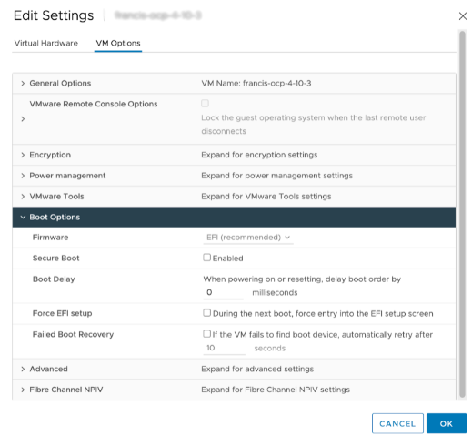
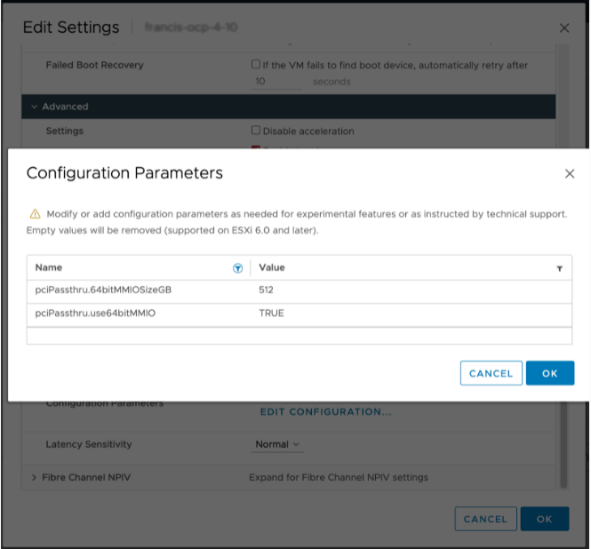
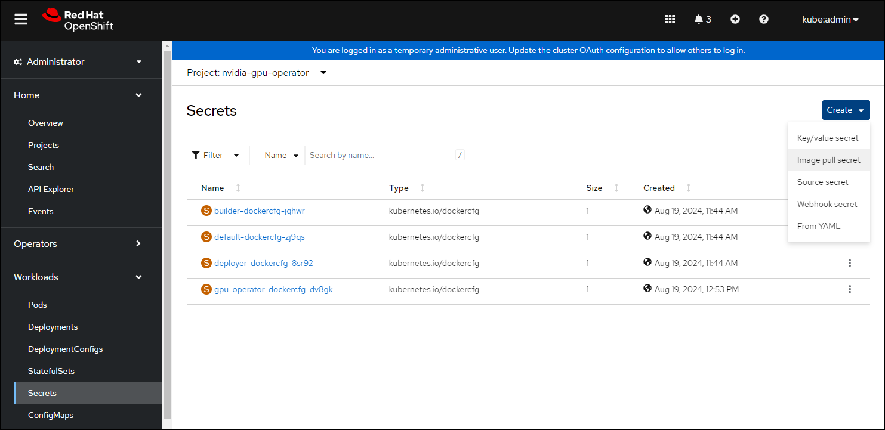
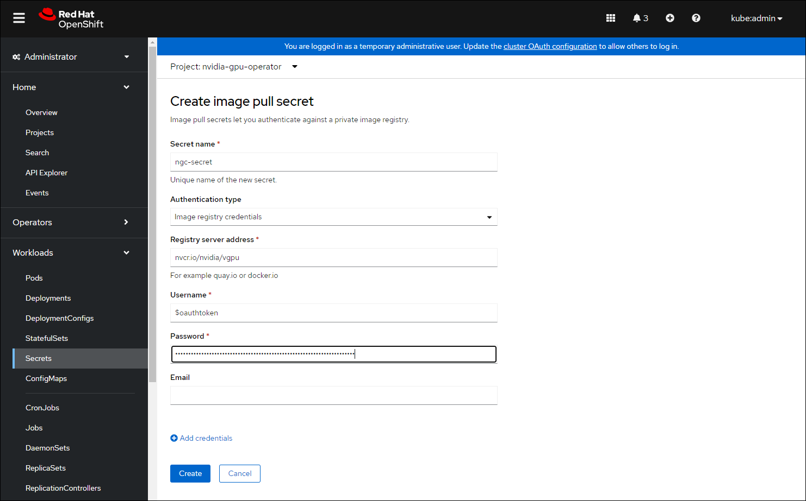
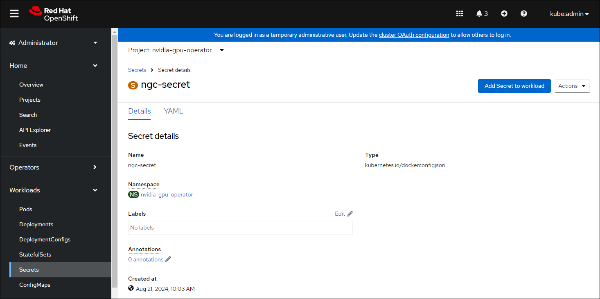
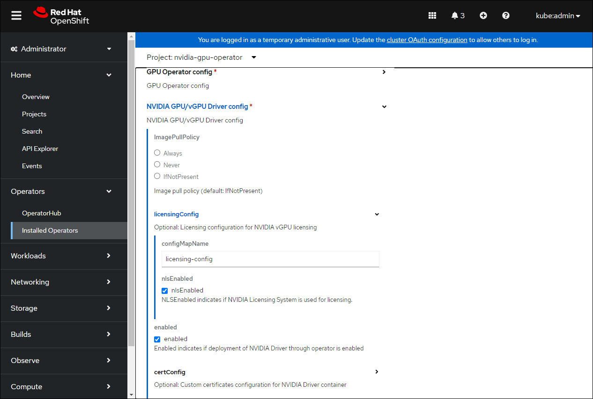
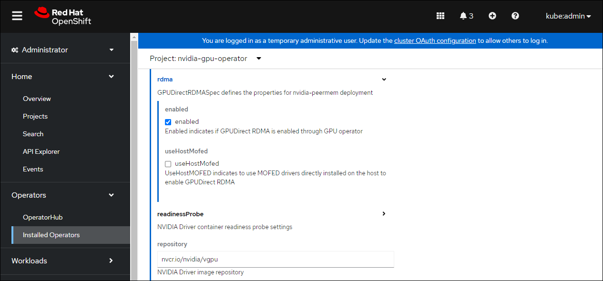
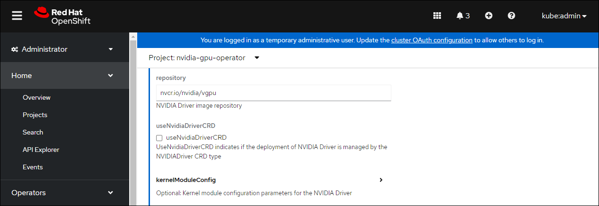
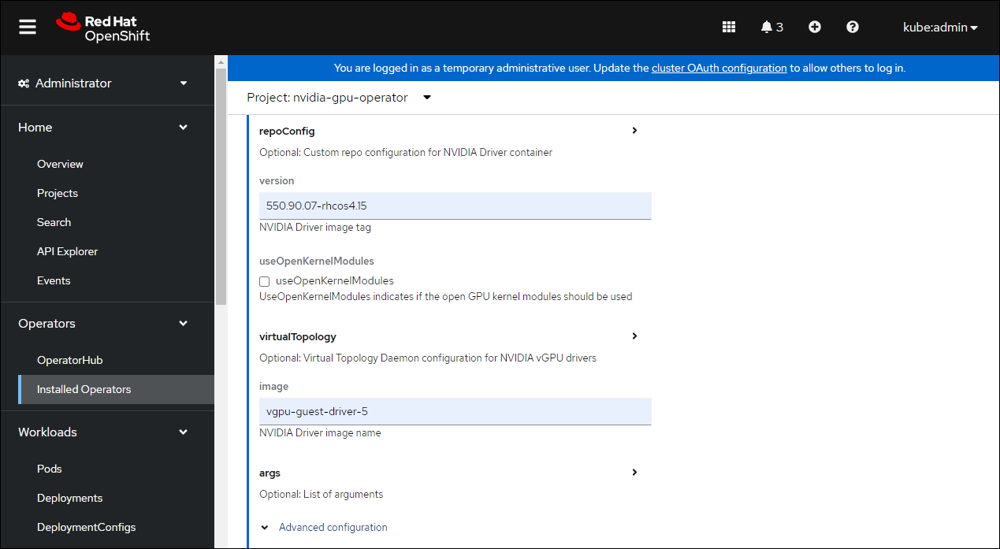
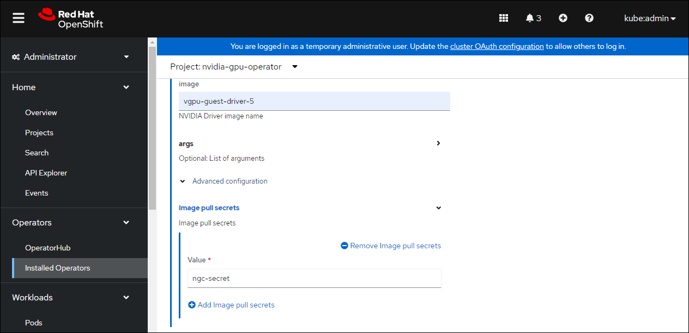

NVIDIA AI Enterprise with OpenShift#
NVIDIA AI Enterprise is an end-to-end, cloud-native suite of AI and data analytics software, optimized, certified, and supported by NVIDIA with NVIDIA-Certified Systems. Additional information can be found at the NVIDIA AI Enterprise web page.
The following methods of installation are supported:
OpenShift Container Platform on bare metal or VMware vSphere with GPU Passthrough
OpenShift Container Platform on VMware vSphere with NVIDIA vGPU
OpenShift Container Platform bare metal or VMware vSphere with GPU Passthrough#
For OpenShift Container Platform bare metal or VMware vSphere with GPU Passthrough you do not need to make changes to the ClusterPolicy. Follow the guidance in Installing the NVIDIA GPU Operator on OpenShift to install the NVIDIA GPU Operator.
Note
The option exists to use the vGPU driver with bare metal and VMware vSphere VMs with GPU Passthrough. In this case, follow the guidance in the section “OpenShift Container Platform on VMware vSphere with NVIDIA vGPU”.
OpenShift Container Platform on VMware vSphere with NVIDIA vGPUs#
Overview#
This section provides insights into deploying NVIDIA AI Enterprise for VMware vSphere with RedHat OpenShift Container Platform.
The steps involved are:
Step 1: Install Node Feature Discovery (NFD) Operator
Step 2: Install NVIDIA GPU Operator
Step 3: Create the NGC secret
Step 4: Create the ConfigMap
Step 5: Create the Cluster Policy
Introduction#
When NVIDIA AI Enterprise is running on VMware vSphere based virtualized infrastructure, a key component is NVIDIA virtual GPU. The NVIDIA AI Enterprise Host Software vSphere Installation Bundle (VIB) is installed on the VMware ESXi host server and it is responsible for communicating with the NVIDIA vGPU guest driver which is installed on the guest VM. Guest VMs use the NVIDIA vGPUs in the same manner as a physical GPU that has been passed through by the hypervisor. In the VM itself, vGPU drivers are installed which support the different license levels that are available.
Note
Installing the NVIDIA vGPU Host Driver VIB on the ESXi host is out of the scope of this document. See the NVIDIA AI Enterprise Deployment Guide for detailed instructions.
Red Hat OpenShift on VMware vSphere#
Follow the steps outlined in the Installing vSphere section of the RedHat OpenShift documentation installing OpenShift on vSphere.
Note
When using virtualized GPUs you must change the boot method of each VM that is deployed as a worker and the VM template to be EFI. This requires powering down running worker VMs. The template must be converted to a VM, then change the boot method to EFI, then convert back to a template.
Secure boot also needs to be disabled as shown:
When using the UPI install method, after Step 8 of the “Installing RHCOS and starting the OpenShift Container Platform bootstrap process” change the boot method to EFI before continuing to Step 9.
When using the IPI method, each VM’s boot method can be changed to EFI after VM deployment.
In addition to the EFI boot setting, ensure that the VM has the following configuration parameters set:
VM Settings > VM options > Advanced > Configuration Parameters > Edit Configuration
pciPassthru.use64bitMMIO TRUE
pciPassthru.64bitMMIOSizeGB 512To support GPUDirect RDMA ensure that the VM has the following configuration parameters set:
VM Settings > VM options > Advanced > Configuration Parameters > Edit Configuration
pciPassthru.allowP2P = true
pciPassthru.RelaxACSforP2P = true
It is also recommended that you reference Running Red Hat OpenShift Container Platform on VMware Cloud Foundation documentation for deployment best practices, system configuration, and reference architecture.
Install Node Feature Discovery Operator#
Follow the guidance in Installing the Node Feature Discovery Operator on OpenShift to install the Node Feature Discovery Operator.
Install NVIDIA GPU Operator#
Follow the guidance in Installing the NVIDIA GPU Operator on OpenShift to install the NVIDIA GPU Operator.
Note
Skip the guidance associated with creating the cluster policy instead follow the guidance in the subsequent sections.
Create the NGC secret#
OpenShift has a secret object type which provides a mechanism for holding sensitive information such as passwords and private source repository credentials. Next you will create a secret object for storing our NGC API key (the mechanism used to authenticate your access to the NGC container registry).
Note
Before you begin, have or generate an NGC API key. Refer to Generating NGC API Keys in NVIDIA NGC Private Registry Guide for more information.
Navigate to Home > Projects and ensure the
nvidia-gpu-operatoris selected.In the OpenShift Container Platform web console, click Secrets from the Workloads drop down.
Click the Create Drop down.
Select Image Pull Secret.
Enter the following into each field:
Secret name: ngc-secret
Authentication type: Image registry credentials
Registry server address:
nvcr.io/nvidia/vgpuUsername:
$oauthtokenPassword:
<NGC-API-KEY>Email:
<YOUR-EMAIL>
Click Create.
A pull secret is created.

Create the ConfigMap for NLS Token#
Prerequisites#
Generate and download a NLS client license token. See Section 4.6 of the NVIDIA License System User Guide for instructions.
Procedure#
Navigate to Home > Projects and ensure the
nvidia-gpu-operatoris selected.Select the Workloads Drop Down menu.
Select ConfigMaps and then click Create ConfigMap.
On the Create ConfigMap window, click YAML view.
Enter the details for your config map.
The
namemust belicensing-config.Copy and paste the information for your NLS client token into the
client_configuration_token.tokparameter.
Click Create.
Create the Cluster Policy Instance#
Now create the cluster policy, which is responsible for maintaining policy resources to create pods in a cluster.
In the OpenShift Container Platform web console, from the side menu, select Operators > Installed Operators, and click NVIDIA GPU Operator.
Select the ClusterPolicy tab, then click Create ClusterPolicy.
The console assigns the default name
gpu-cluster-policy.Expand the drop down for NVIDIA GPU/vGPU Driver config and then licensingConfig. In the configMapName field, enter the name of the licensing config map that you created previously,
licensing-config. Select the nlsEnabled checkbox. Refer the screenshots for parameter examples and modify values accordingly.configMapName: licensing-config
nlsEnabled: nlsEnabled
enabled: enabled
Expand the rdma menu and select enabled if you want to deploy GPUDirect RDMA:
Scroll down to specify repository path under the NVIDIA GPU/vGPU Driver config section. See the screenshot below for parameter examples and modify values accordingly.
repository:
nvcr.io/nvidia/vgpu
Scroll down further to image name and specify the NVIDIA vGPU driver version under the NVIDIA GPU/vGPU Driver config section.
version: 550.90.07-rhcos4.15
image: vgpu-guest-driver-5
The preceding version and image are examples for NVIDIA AI Enterprise 5. Specify the vGPU driver version and image for the appropriate OpenShift Container Platform version.
4.9 is
vgpu-guest-driver-3-0:525.60.13-rhcos4.94.10 is
vgpu-guest-driver-3-0:525.60.13-rhcos4.104.11 is
vgpu-guest-driver-3-0:525.60.13-rhcos4.11
Expand the Advanced configuration menu and specify the image pull secret that you created earlier.
Click Create.
The GPU Operator installs all the required components to set up the NVIDIA GPUs in the OpenShift Container Platform cluster.
Note
Wait at least 10 to 20 minutes before performing troubleshooting because installation requires several minutes to complete.
The status of the newly deployed ClusterPolicy gpu-cluster-policy for the NVIDIA GPU Operator changes to State:ready when the installation succeeds.

Verify the ClusterPolicy installation by running the following command that displays the node names and GPU counts:
$ oc get nodes -o=custom-columns='Node:metadata.name,GPUs:status.capacity.nvidia\.com/gpu'Example Output
Node GPUs nvaie-ocp-7rfr8-master-0 <none> nvaie-ocp-7rfr8-master-1 <none> nvaie-ocp-7rfr8-master-2 <none> nvaie-ocp-7rfr8-worker-7x5km 1 nvaie-ocp-7rfr8-worker-9jgmk <none> nvaie-ocp-7rfr8-worker-jntsp 1 nvaie-ocp-7rfr8-worker-zkggt <none>
Verify the successful installation of the NVIDIA GPU Operator#
Perform the following steps to verify the successful installation of the NVIDIA GPU Operator.
In the OpenShift Container Platform web console, from the side menu, select Workloads > Pods.
Under the Project drop down select the nvidia-gpu-operator project.
Verify the pods are successfully deployed.
Alternatively from the command line run the following command:
$ oc get pods -n nvidia-gpu-operatorNAME READY STATUS RESTARTS AGE pod/gpu-feature-discovery-hlpgs 1/1 Running 0 91m pod/gpu-operator-8dc8d6648-jzhnr 1/1 Running 0 94m pod/nvidia-dcgm-exporter-ds9xd 1/1 Running 0 91m pod/nvidia-dcgm-k7tz6 1/1 Running 0 91m pod/nvidia-device-plugin-daemonset-nqxmc 1/1 Running 0 91m pod/nvidia-driver-daemonset-49.84.202202081504-0-9df9j 2/2 Running 0 91m pod/nvidia-node-status-exporter-7bhdk 1/1 Running 0 91m